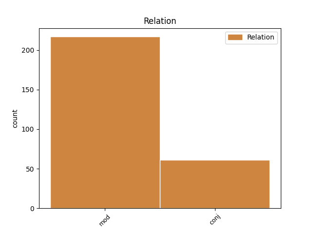
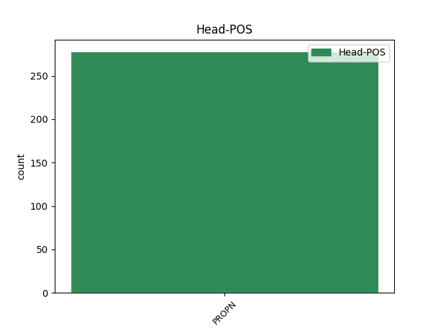
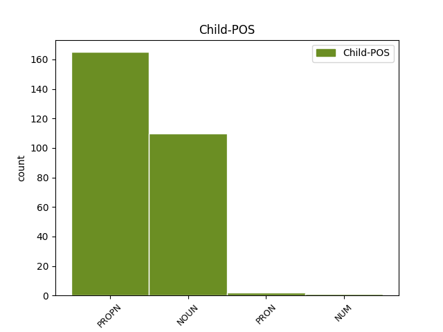

Distribution of features within this leaf



Agreement Rules sorted by frequency.
When the head token is PROPN
1 சென்னையில் _ _ _ _ 0 _ _ _
2 கஸ்தூரிபா _ _ _ _ 0 _ _ _
3 காந்தி _ _ _ _ 0 _ _ _
4 தாய் _ _ _ _ 0 _ _ _
5 சேய் _ _ _ _ 0 _ _ _
6 நல _ _ _ _ 0 _ _ _
7 மருத்துவமனையின் _ _ _ _ 0 _ _ _
8 125-ம் _ _ _ _ 0 _ _ _
9 ஆண்டு _ _ _ _ 0 _ _ _
10 விழா _ _ _ _ 0 _ _ _
11 - _ _ _ _ 0 _ _ _
12 சேப்பாக்கம் _ _ _ _ 0 _ _ _
13 சட்டப் _ _ _ _ 0 _ _ _
14 பேரவை _ _ _ _ 0 _ _ _
15 உறுப்பினர் _ _ _ _ 0 _ _ _
16 தொகுதி _ _ _ _ 0 _ _ _
17 மேம்பாட்டு _ _ _ _ 0 _ _ _
18 நிதிய் _ _ _ _ 0 _ _ _
19 இலிருந்து _ _ _ _ 0 _ _ _
20 கட்டப்பட்ட _ _ _ _ 0 _ _ _
21 கட்டடங்களின் _ _ _ _ 0 _ _ _
22 திறப்பு _ _ _ _ 0 _ _ _
23 விழா _ _ _ _ 0 _ _ _
24 - _ _ _ _ 0 _ _ _
25 இதய _ _ _ _ 0 _ _ _
26 நோய் _ _ _ _ 0 _ _ _
27 மற்றும் _ _ _ _ 0 _ _ _
28 மகளிர் _ _ _ _ 0 _ _ _
29 கருப்பை _ _ _ _ 0 _ _ _
30 வாய் _ _ _ _ 0 _ _ _
31 , _ _ _ _ 0 _ _ _
32 மார்பகப் _ _ _ _ 0 _ _ _
33 புற்றுநோய்த் _ _ _ _ 0 _ _ _
34 தடுப்புத் _ _ _ _ 0 _ _ _
35 திட்டங்களை _ _ _ _ 0 _ _ _
36 வியாழக்கிழமை _ _ _ _ 0 _ _ _
37 தொடங்கி _ _ _ _ 0 _ _ _
38 வைத்து _ _ _ _ 0 _ _ _
39 முதல்வர் முதல்வர் NOUN NNN-3SH-- Case=Nom|Gender=Com|Number=Sing|Person=3|Polite=Form 40 mod _ LTranslit=mutalvar|Translit=mutalvar
40 கருணாநிதி கருணாநிதி PROPN NEN-3SH-- Case=Nom|Gender=Com|Number=Sing|Person=3|Polite=Form 0 _ _ _
41 பேசியத் _ _ _ _ 0 _ _ _
42 ஆவது _ _ _ _ 0 _ _ _
43 : _ _ _ _ 0 _ _ _
44 . _ _ _ _ 0 _ _ _
Disagree Examples:
1 கொடநாடு _ _ _ _ 0 _ _ _
2 எஸ்டேட் _ _ _ _ 0 _ _ _
3 நுழைவாயிலுக்கு _ _ _ _ 0 _ _ _
4 வந்த _ _ _ _ 0 _ _ _
5 ஜெயலலிதாவை _ _ _ _ 0 _ _ _
6 முன்னாள் _ _ _ _ 0 _ _ _
7 அமைச்சர் _ _ _ _ 0 _ _ _
8 ஏ.கே.செல்வராஜ் ஏ.கே.செல்வராஜ் PROPN NEN-3SH-- Case=Nom|Gender=Com|Number=Sing|Person=3|Polite=Form 0 _ _ _
9 , _ _ _ _ 0 _ _ _
10 அதிமுக _ _ _ _ 0 _ _ _
11 பிரமுகர்கள் பிரமுகர் NOUN NNN-3PA-- Animacy=Anim|Case=Nom|Gender=Com|Number=Plur|Person=3 8 conj _ LTranslit=piramukar|Translit=piramukarkaḷ
12 எல்.மணி _ _ _ _ 0 _ _ _
13 , _ _ _ _ 0 _ _ _
14 கே.கே.மாதன் _ _ _ _ 0 _ _ _
15 உள்ளிட்டோர் _ _ _ _ 0 _ _ _
16 வரவேற்றனர் _ _ _ _ 0 _ _ _
17 . _ _ _ _ 0 _ _ _
1 தமிழர்களை _ _ _ _ 0 _ _ _
2 அவர்களது _ _ _ _ 0 _ _ _
3 சொந்த _ _ _ _ 0 _ _ _
4 இடங்களில் _ _ _ _ 0 _ _ _
5 மறுபடியும் _ _ _ _ 0 _ _ _
6 குடியமர்த்துவது _ _ _ _ 0 _ _ _
7 குறித்த் _ _ _ _ 0 _ _ _
8 உம் _ _ _ _ 0 _ _ _
9 அகதி _ _ _ _ 0 _ _ _
10 முகாம்களில் _ _ _ _ 0 _ _ _
11 உள்ள _ _ _ _ 0 _ _ _
12 தமிழர்களுக்க் தமிழர் PROPN NED-3PA-- Animacy=Anim|Case=Dat|Gender=Com|Number=Plur|Person=3 0 _ _ _
13 உம் _ _ _ _ 0 _ _ _
14 உள்ளூர் _ _ _ _ 0 _ _ _
15 மக்களுக்க் மக்கள் NOUN NND-3SN-- Case=Dat|Gender=Neut|Number=Sing|Person=3 12 conj _ LTranslit=makkaḷ|Translit=makkaḷukk
16 உம் _ _ _ _ 0 _ _ _
17 அடிப்படை _ _ _ _ 0 _ _ _
18 வசதிகளை _ _ _ _ 0 _ _ _
19 செய்து _ _ _ _ 0 _ _ _
20 கொடுப்பது _ _ _ _ 0 _ _ _
21 குறித்த் _ _ _ _ 0 _ _ _
22 உம் _ _ _ _ 0 _ _ _
23 அரசுப் _ _ _ _ 0 _ _ _
24 பிரதிநிதிய் _ _ _ _ 0 _ _ _
25 உடன் _ _ _ _ 0 _ _ _
26 அவர் _ _ _ _ 0 _ _ _
27 ஆலோசித்தார் _ _ _ _ 0 _ _ _
28 . _ _ _ _ 0 _ _ _
1 அவருடன் _ _ _ _ 0 _ _ _
2 இலங்கைக்க் _ _ _ _ 0 _ _ _
3 ஆன _ _ _ _ 0 _ _ _
4 இந்தியத் _ _ _ _ 0 _ _ _
5 தூதர் _ _ _ _ 0 _ _ _
6 அசோக் _ _ _ _ 0 _ _ _
7 காந்தா _ _ _ _ 0 _ _ _
8 துணைத் _ _ _ _ 0 _ _ _
9 தூதர் _ _ _ _ 0 _ _ _
10 விக்ரம் _ _ _ _ 0 _ _ _
11 மிஸ்ரி மிஸ்ரி PROPN NEN-3SH-- Case=Nom|Gender=Com|Number=Sing|Person=3|Polite=Form 0 _ _ _
12 மற்றும் _ _ _ _ 0 _ _ _
13 இலங்கை _ _ _ _ 0 _ _ _
14 அதிகாரிகள் அதிகாரி NOUN NNN-3PA-- Animacy=Anim|Case=Nom|Gender=Com|Number=Plur|Person=3 11 conj _ LTranslit=atikāri|Translit=atikārikaḷ
15 உம் _ _ _ _ 0 _ _ _
16 சென்றனர் _ _ _ _ 0 _ _ _
17 . _ _ _ _ 0 _ _ _
1 கொழும்பு _ _ _ _ 0 _ _ _
2 திரும்பியவ் _ _ _ _ 0 _ _ _
3 உடன் _ _ _ _ 0 _ _ _
4 புதன்கிழமை _ _ _ _ 0 _ _ _
5 மாலை _ _ _ _ 0 _ _ _
6 தமிழ் தமிழ் PROPN NEN-3SN-- Case=Nom|Gender=Neut|Number=Sing|Person=3 7 mod _ LTranslit=tamil|Translit=tamil
7 எம்.பி.க்கள் எம்.பி. PROPN NEN-3PA-- Animacy=Anim|Case=Nom|Gender=Com|Number=Plur|Person=3 0 _ _ _
8 மற்றும் _ _ _ _ 0 _ _ _
9 தமிழர் _ _ _ _ 0 _ _ _
10 கட்சித் _ _ _ _ 0 _ _ _
11 தலைவர்கள் _ _ _ _ 0 _ _ _
12 உடன் _ _ _ _ 0 _ _ _
13 அவர் _ _ _ _ 0 _ _ _
14 ஆலோசனை _ _ _ _ 0 _ _ _
15 செய்வார் _ _ _ _ 0 _ _ _
16 என்று _ _ _ _ 0 _ _ _
17 தெரிகிறது _ _ _ _ 0 _ _ _
18 . _ _ _ _ 0 _ _ _
1 ஈழத் ஈழம் PROPN NEN-3SN-- Case=Nom|Gender=Neut|Number=Sing|Person=3 2 mod _ LTranslit=īlam|Translit=īlat
2 தமிழர்களை தமிழர் PROPN NEA-3PA-- Animacy=Anim|Case=Acc|Gender=Com|Number=Plur|Person=3 0 _ _ _
3 ஈவிரக்கம் _ _ _ _ 0 _ _ _
4 இன்றி _ _ _ _ 0 _ _ _
5 லட்சக் _ _ _ _ 0 _ _ _
6 கணக்கில் _ _ _ _ 0 _ _ _
7 கொன்றுகு _ _ _ _ 0 _ _ _
8 வித்த _ _ _ _ 0 _ _ _
9 ராஜபட்சவை _ _ _ _ 0 _ _ _
10 தில்லிக்கு _ _ _ _ 0 _ _ _
11 அழைத்துச் _ _ _ _ 0 _ _ _
12 சிறப்பிக்க _ _ _ _ 0 _ _ _
13 விரும்பும் _ _ _ _ 0 _ _ _
14 மத்திய _ _ _ _ 0 _ _ _
15 அரசின் _ _ _ _ 0 _ _ _
16 அணுகுமுறைய் _ _ _ _ 0 _ _ _
17 ஆனது _ _ _ _ 0 _ _ _
18 சுமார் _ _ _ _ 0 _ _ _
19 10 _ _ _ _ 0 _ _ _
20 கோடிக்க் _ _ _ _ 0 _ _ _
21 உம் _ _ _ _ 0 _ _ _
22 மேலான _ _ _ _ 0 _ _ _
23 ஒட்டுமொத்தத் _ _ _ _ 0 _ _ _
24 தமிழினத்தையும் _ _ _ _ 0 _ _ _
25 கேவலப்படுத்துவத் _ _ _ _ 0 _ _ _
26 ஆக _ _ _ _ 0 _ _ _
27 அமைந்த் _ _ _ _ 0 _ _ _
28 உள்ளது _ _ _ _ 0 _ _ _
29 . _ _ _ _ 0 _ _ _